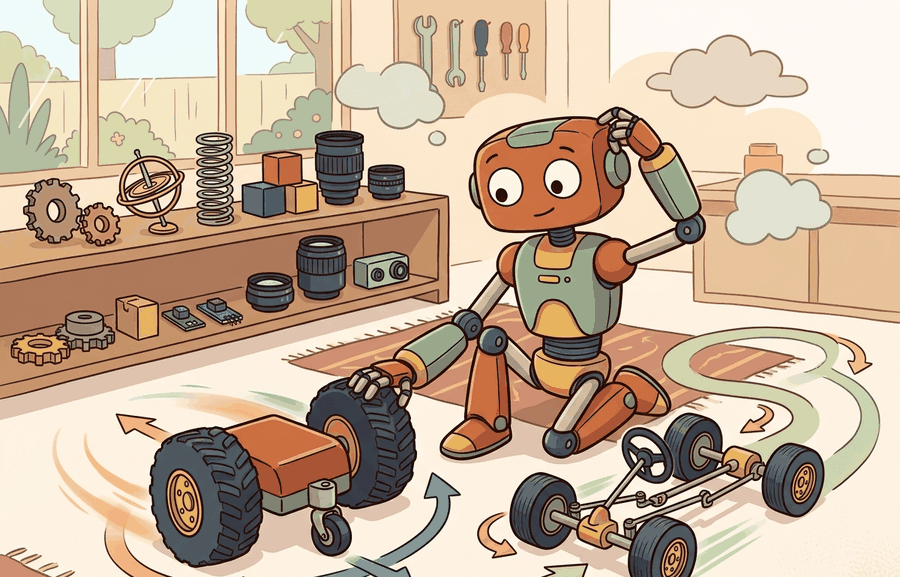

"The differential drive must spin to steer; the car must move to turn. Neither apologizes for the constraint."
A Ground Robot, Resigned

This section builds on the non-holonomic constraint model introduced in section 5.2. The kinematic models developed here feed directly into section 5.5, where forward kinematics is extended to multi-joint chains, and into section 30.3, where path planners must respect platform-specific turning-radius limits. The distinction between differential-drive and car-like motion recurs throughout Part VI alongside sensor-based localization, where each platform's reachable trajectory set shapes what the navigation stack can recover from.
A warehouse robot gets a "face the shelf" command at midnight. A TurtleBot spins in place and is done in half a second. A self-driving car prototype stalls: it cannot rotate without moving forward, and the aisle is too narrow for an arc. Same command, radically different outcomes, because the kinematic contract differs at the wheel level. Every navigation stack, every path planner, every learned locomotion policy inherits this constraint silently. You will derive the two motion models from first principles, trace how each converts wheel commands into world-frame trajectories, and build the intuition that tells you, before writing a single line of a planner, which platform can reach a goal pose at all.
This section develops the technical contract for Differential-drive and car-like robots into a usable mental model. First we define the object of study, then we connect it to the agent loop, then we test it with a compact implementation.
The key question in Differential-drive and car-like robots is practical: what must the agent know, what can it observe, what action is available, and what evidence shows that the action worked under the stated conditions?
A representation earns its place when it changes the measurable action interface. In Differential-drive and car-like robots, the reader should keep asking which decision becomes easier, safer, or more reliable.
Theory
For Differential-drive and car-like robots, the practical design rule is to make the interface inspectable before optimization begins: inputs, outputs, units, latency, bounds, and failure labels should all be visible in the saved artifact.
Differential-drive robots and car-like robots both live in the plane, but their action interfaces are different. A differential-drive base commands left and right wheel speeds, which convert into forward speed and yaw rate. A car-like base commands forward speed and steering angle, which creates a turning radius rather than an in-place rotation. Both are examples of non-holonomic motion, since neither robot can move freely in all directions from a given pose.
This distinction changes the planner. A differential-drive robot can spin in place to face a target, while a car-like robot needs clearance for an arc; this is the minimum turning radius constraint, and it determines which goal poses are reachable at all. The same goal pose can therefore be easy for one platform and infeasible for another unless the path planner respects the platform's kinematic model.
Consider a specific case: a TurtleBot 4 (differential drive, wheelbase $L = 0.233\,\text{m}$, wheel radius $r = 0.033\,\text{m}$) navigating a tight warehouse aisle 0.6 m wide. Setting $\omega_L = -\omega_R = 5\,\text{rad/s}$ produces pure in-place rotation at $\dot\theta = rL^{-1}(\omega_R - \omega_L) \approx 1.4\,\text{rad/s}$, zero translation. The same command sent to a small car-like robot (e.g., a 1:10 scale Ackermann chassis with $L = 0.26\,\text{m}$, $\delta_{\max} = 30°$, minimum turning radius $R_{\min} = L/\tan\delta_{\max} \approx 0.45\,\text{m}$) requires at least 0.45 m of lateral clearance to begin the turn. In the 0.6 m aisle the car-like robot can just barely execute a three-point turn; in a 0.4 m aisle it cannot reorient at all. This single numeric comparison drives the platform selection before any learning or optimization begins.
When measuring the wheelbase $L$ for a differential-drive robot, use the distance between the two wheel centerlines, not between the outer tire edges. For a TurtleBot 4 with 33 mm wide wheels, the outer-edge measurement exceeds the true wheelbase by a full wheel width (33 mm), which inflates $\dot\theta = r L^{-1}(\omega_R - \omega_L)$ by roughly 14% and turns a 90-degree commanded rotation into a 78-degree actual turn. In ROS 2, this value lives in the wheel_separation parameter of diff_drive_controller; verify it against calipers on the physical robot before trusting any odometry-based localization.
The mechanism in Differential-drive and car-like robots is the contract between representation and action. Name what enters the module, what leaves it, which assumptions make that transformation valid, and which log would reveal a bad handoff.
Worked Example
The example integrates both planar models from identical "spin to face the target" commands. The differential-drive base converts equal-and-opposite wheel speeds into in-place yaw; the car-like bicycle model has no such command, so the same intent produces a forward arc with a finite turning radius.
import numpy as np
def diff_drive(state, wL, wR, r, L, dt):
x, y, th = state
v = r/2 * (wR + wL) # body forward speed
w = r/L * (wR - wL) # yaw rate
return np.array([x + v*np.cos(th)*dt, y + v*np.sin(th)*dt, th + w*dt])
def bicycle(state, v, delta, L, dt):
x, y, th = state
return np.array([x + v*np.cos(th)*dt,
y + v*np.sin(th)*dt,
th + (v/L)*np.tan(delta)*dt])
dt, r, L = 0.01, 0.05, 0.30
# Differential drive: wheels turn opposite -> pure rotation
s = np.array([0.0, 0.0, 0.0])
for _ in range(int(1.0/dt)):
s = diff_drive(s, wL=-4.0, wR=+4.0, r=r, L=L, dt=dt)
print("diff-drive after 'spin':", np.round(s, 3), "-> moved:",
round(float(np.hypot(s[0], s[1])), 4), "m") # ~0 m, theta changed
# Car-like: max steering, constant speed -> minimum-radius arc, no in-place spin
s = np.array([0.0, 0.0, 0.0])
delta_max = np.deg2rad(30)
for _ in range(int(1.0/dt)):
s = bicycle(s, v=1.0, delta=delta_max, L=L, dt=dt)
R_min = L/np.tan(delta_max)
print("car-like after 'turn' :", np.round(s, 3), "-> R_min:",
round(R_min, 3), "m") # nonzero displacement, bounded curvature
The differential-drive base ends at roughly the origin with a changed heading; the bicycle base sweeps an arc of radius $R=L/\tan\delta$. A path planner that lets the car-like robot rotate in place has silently swapped one platform model for the other.
The fragment should expose wheel radius, track width, steering angle, curvature, and integration timestep. Robotics Toolbox, Drake, and Nav2 are useful after the vehicle kinematics are correct in the same frame as the controller.
Practical Recipe
- Write the observation, action, and success metric before choosing a model.
- Build a baseline that is simple enough to debug by inspection.
- Add the library implementation only after the baseline behavior is understood.
- Record failures as structured cases: perception error, state error, planning error, control error, or evaluation error.
- Run at least one perturbation test before trusting the result.
The common mistake in Differential-drive and car-like robots is to celebrate the component score before checking the closed-loop handoff. The failure usually appears at the boundary: stale state, wrong frame, delayed action, saturated actuator, or metric that ignores the real task cost.
A robotics team using Differential-drive and car-like robots should log not only final success, but intermediate observations, chosen actions, controller status, and recovery events. The logs reveal whether the method is solving the task or merely passing the easiest episodes.
For differential-drive and car-like robots, the useful test is simple: could a teammate point to the log line, plot, or trace that proves the idea changed the agent's next action?
For Differential-drive and car-like robots, treat frontier claims as hypotheses until they expose enough detail to reproduce the result: data boundary, embodiment, controller interface, evaluation panel, and failure cases.
Can you name the observation, state estimate, action, success metric, and most likely failure mode for Differential-drive and car-like robots? If not, the system boundary is still too vague.
Production Pattern
Differential-drive and car-like robots sits inside the Part II robotics contract: geometry defines where things are, kinematics defines what motion is possible, dynamics defines what motion costs, control defines how errors are corrected, and sensing defines what the agent can know on time.
Check wheel radius, axle length, sign convention, and integration step before trusting a mobile-base trajectory. This makes the section useful to students, builders, and researchers at the same time: the idea has an intuitive role, a formal interface, a runnable check, and a failure mode that can be reproduced.
For Differential-drive and car-like robots, kinematics maps joint or body motion into task-space motion without explaining forces. Preserve joint limits, frame conventions, velocity units, and singularity margins in the artifact.
| Tool or Library | What It Handles | Verification Check |
|---|---|---|
| Pinocchio | computes articulated-body kinematics, dynamics, and derivatives | Verify model frames, joint ordering, and derivative convention against the URDF. |
| Robotics Toolbox for Python | supports practical work on Differential-drive and car-like robots | Verify the library output against the hand-built baseline on one small case. |
| MoveIt 2 | supports practical work on Differential-drive and car-like robots | Verify the library output against the hand-built baseline on one small case. |
| Drake | models dynamical systems, multibody plants, optimization, and controllers | Verify scalar type, plant finalization, frame convention, and solver status. |
| ROS 2 control | supports practical work on Differential-drive and car-like robots | Verify the library output against the hand-built baseline on one small case. |
Use this recipe when turning Differential-drive and car-like robots into code, a simulator experiment, or a robot diagnostic. The point is not to use every library. The point is to keep the hand-built baseline and the maintained-tool path comparable.
- Write the joint vector, frame target, velocity convention, and constraint set before solving.
- Check forward kinematics on a known posture, then perturb one joint and inspect the end-effector delta.
- Compare an analytic or numerical Jacobian with Pinocchio, Robotics Toolbox, or Drake on the same robot model.
- Log residual error, joint-limit distance, manipulability, and solver iteration count in one artifact.
- Treat singularities and infeasible targets as design signals, not as solver annoyances.
For Differential-drive and car-like robots, compare methods only through one saved artifact that preserves the inputs, outputs, units, timestamps, latency budget, configuration, seed, metric definition, and failure labels relevant to this section. The comparison is meaningful only when the same script evaluates the same panel.
Extend the section exercise by adding one perturbation specific to Differential-drive and car-like robots and one latency or uncertainty check. Save the result in the EvidenceRecord schema, then explain which library output you trust and why.
Kinematic failures often arrive as a plausible pose with an impossible motion. Inspect wheel radius, wheel separation, steering angle limits, integration step, and sign convention before blaming the planner. For this section, first reproduce one short arc by hand, then rerun it through Robotics Toolbox for Python, Drake, ROS 2 navigation tools, or a small NumPy rollout. If the two disagree, inspect conventions and timing before changing the model.
Technical Core
Differential-drive and car-like robots needs a topic-native core: variables, equations or system contracts, an algorithmic procedure, an expected output, and a failure diagnosis. Figure 5.3.T summarizes the chain this section must preserve when moving from a teaching example to a real embodied system.
Differential drive: $v=\tfrac r2(\omega_R+\omega_L)$, $\dot\theta=\tfrac rL(\omega_R-\omega_L)$, $\dot x=v\cos\theta$, $\dot y=v\sin\theta$. Car-like bicycle model: $\dot x=v\cos\theta$, $\dot y=v\sin\theta$, $\dot\theta=\tfrac vL\tan\delta$.
The parameters $r$, $L$, and $\delta$ are not cosmetic. A small wheel-radius or axle-length error accumulates into odometry drift, while a steering-limit error turns a feasible parking maneuver into a path the robot cannot execute.
- Choose the platform model and record wheel radius, axle length, steering limits, and units.
- Convert actuator commands into $(v,\dot\theta)$ using the platform equation.
- Integrate $(x,y,\theta)$ over a short horizon with a fixed $\Delta t$ and log every intermediate pose.
- Compare the rollout with simulator or robot odometry on the same commands before tuning a planner.
| Contract Field | What To Specify | Why It Matters |
|---|---|---|
| State and observation | Variables, units, timestamps, frames, and uncertainty. | Prevents a model score from being mistaken for robot capability. |
| Action interface | Command type, limits, update rate, and safety fallback. | Makes the learned or planned output executable. |
| Evidence artifact | Trace, metric, configuration, seed, and failure label. | Allows baseline and library path to be compared in one pass. |
| Tool path | Modern Robotics, Pinocchio, Drake, ROS 2 tf2, MoveIt, NumPy | Shows the practical library route after the mechanism is understood. |
Expected output is a short path whose curvature and yaw-rate limits match the selected platform. If a car-like robot appears to rotate in place, the model has silently become differential drive.
Knowing when each model applies is as important as knowing the equations. Differential drive is the right choice when the robot must operate in confined spaces, execute in-place reorientation, or follow paths with tight curvature; it is the wrong choice when wheel slip under large yaw rates is unacceptable (heavy payload) or when passive stability at speed matters. Car-like kinematics apply when forward speed is sustained and steering angle is small (highway-like corridors, outdoor grounds); they break down at very low speeds where the linearized bicycle model loses accuracy, and in any scenario where the robot must reach a goal that lies directly behind it without a multi-step maneuver.
A mobile-base result fails when left and right wheels are swapped, axle length is measured between tire edges instead of wheel centers, steering angle is confused with yaw rate, or Euler integration is trusted over long horizons without correction. A concrete symptom: if a simulated differential-drive robot drifts sideways during a forward command, the most likely cause is a sign error on one wheel speed in the $v = \tfrac{r}{2}(\omega_R + \omega_L)$ term, not a planner bug. Check the kinematic equations on a one-second straight-line command before touching the planner or controller.
Section References
Core references for Differential-drive and car-like robots: Modern Robotics; Murray, Li, and Sastry; Siciliano et al.; LaValle; and official documentation for Drake, MuJoCo, Pinocchio, CasADi, python-control, GTSAM, ROS 2, and OpenCV as applicable.
Use these references to check notation, frame conventions, units, solver assumptions, and maintained-library behavior.
Differential-drive and car-like robots is useful when it makes the perception-action loop more reliable, not when it merely adds a more impressive model name.
Design a method-matched experiment for Differential-drive and car-like robots. Specify the environment, observations, actions, metric, one perturbation, and the library output you would compare against the hand-built baseline.